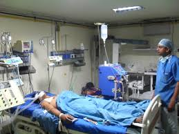
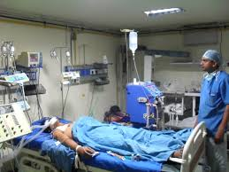

Wards
MWANANCHI HOSPITAL ORGANISATION is one of the best Hospitals in Kenya apparently in accordance with the WHO 2018 report. Having the cleanest wards and proper attendance of nurses
and doctors to the patients.
 

Ambulances
The Hospital still has the modernized ambulances with high trained drivers who ensure that the lives of the patients are well cared by being taken to respective Hospital branches.